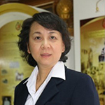
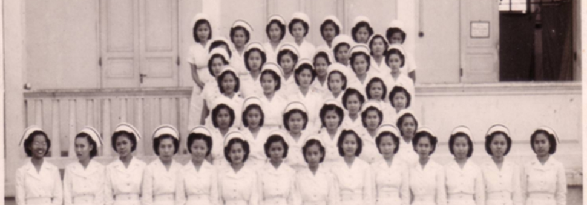

About us

History & Background
Following Her Majesty Queen Sri Bajrindra, the Queen Consort of King Chulalongkorn (Rama V), who had experienced both traditional childbirth and modern midwifery when she gave birth to His Royal Highness Prince Asdang Dejavudh on May 17, 1888. Under the care of Dr. Peter Gowan in the modern midwifery style, Her Majesty discontinued the traditional postpartum practice of lying by the fire (Yu Fai) and stated that not lying by the fire was much more comfortable. She then encouraged her royal court to receive modern midwifery services, which gained widespread popularity. Her Majesty recognized that midwifery in Thailand lacked properly qualified and knowledgeable modern midwives, as pregnant women were still cared for in the traditional way, leading to high risks and dangers. Consequently, she donated her personal funds to establish the School of Midwifery and Nursing at Siriraj Hospital. The school officially opened on January 12, 1896, to provide education for women in midwifery and nursing.
When the School of Midwifery and Nursing was established for the first time in Thailand, it marked the birth of midwifery and maternal-newborn nursing education alongside the nursing school itself, which later evolved into the present-day Faculty of Nursing, Mahidol University. The Department of Obstetric and Gynaecological Nursing has progressed and evolved hand-in-hand with the School of Midwifery and Nursing, making it the first and oldest nursing department in Thailand. The administration of midwifery and maternal-infant care education has continuously adapted and revised its curriculum in response to societal and scientific advancements. The department was officially upgraded from a division to the Department of Obstetric and Gynaecological Nursing on February 18, 1974, by the organizing committee of the Faculty of Nursing, chaired by Mrs. Sanguansuk Chantawong, Director of Siriraj School of Nursing, Midwifery, and Public Health at that time. This official approval was published in the Special Royal Gazette, Volume 91, Section 37, pages 49-50, dated February 28, 1974 (B.E. 2517).
Department of Obstetric and Gynaecological Nursing is an academic leader in education, research, and academic service related to midwifery, maternal-newborn and family nursing, as well as women's health nursing, to improve the quality of life of women, mothers, newborns, and families, which yields long-term benefits to society.
The department has a total of 29 personnel, consisting of 28 faculty members and 1 administrative support staff.
Classified by academic rank, there are:- 4 Associate Professors
- 8 Assistant Professors
- 16 Instructors

Past & Present Heads of Department





